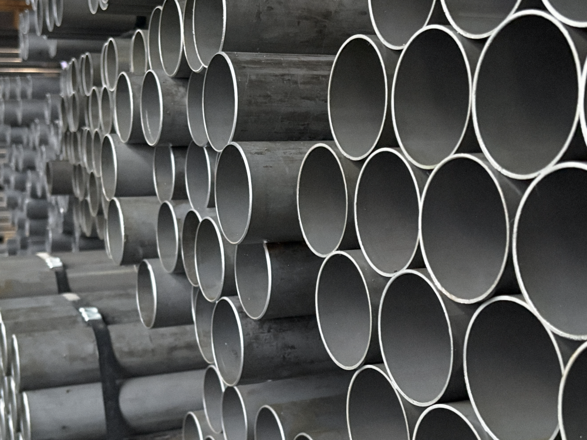
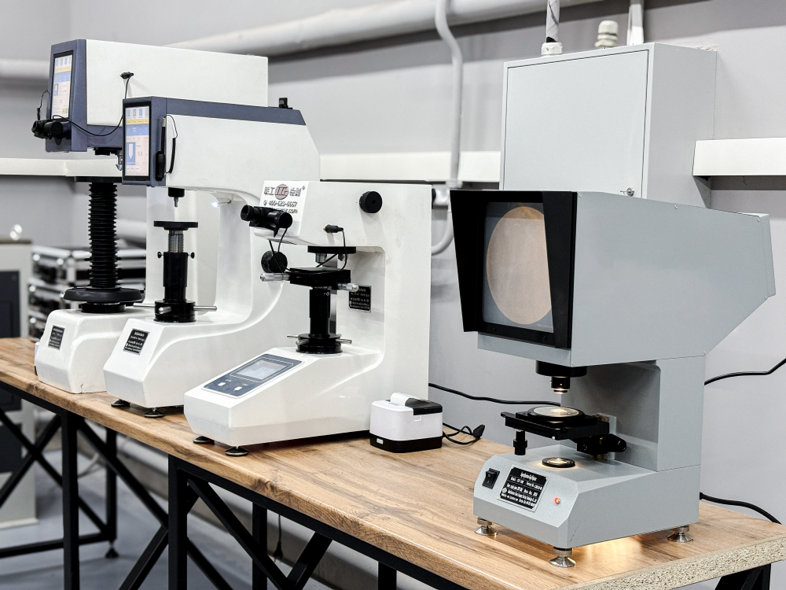
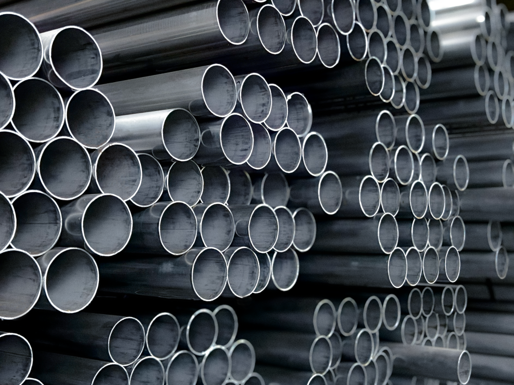
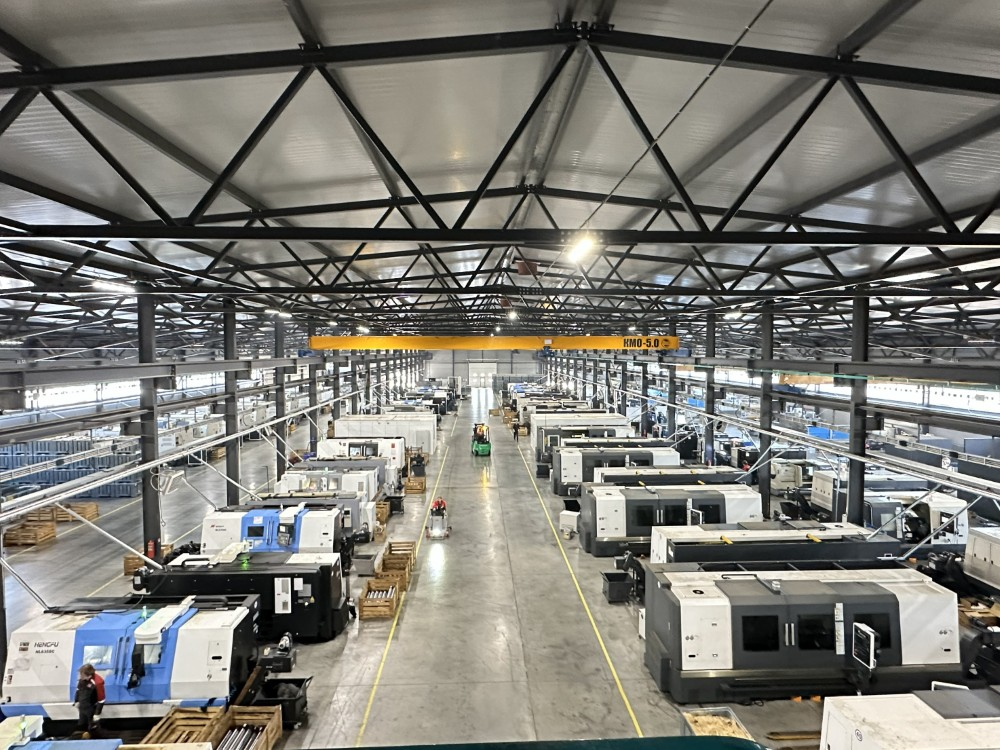

БАЗтьюб
Производитель стальных труб для гидроцилиндров и карданных валов. Стальные трубы общего назначения. Трубы для нефтегазовой отрасли. Трубы для изготовления погружных электродвигателей и моторов.
Перейти на baztube.by →ООО «БАЗтьюб»
Производитель стальных труб для гидроцилиндров и карданных валов. Стальные трубы общего назначения. Трубы для нефтегазовой отрасли. Трубы для изготовления погружных электродвигателей и моторов.
Сферы применения труб из стали:
Стальные трубы широко используются в различных секторах благодаря своей универсальности и высокой прочности. Одним из основных направлений применения является строительство. Такие трубы активно внедряются в конструкции зданий, ферм, мостов, обеспечивая надёжное основание и стойкость.
1. В сфере транспорта находят применение для создания кузовов, рам грузовых и коммерческих автомобилей, обеспечивая необходимую прочность и лёгкость конструкции.
2. В энергетической отрасли используются для возведения опор линий электропередач и нефтегазовых трубопроводов.
3. В промышленности широко применяются для создания несущих конструкций, стеллажей, а также оборудования различных производственных линий.
Таким образом, изготовление труб под заказ из листового металла представляет собой востребованную услугу, которая находит широкое применение в различных областях — от строительства до транспорта и промышленности.


